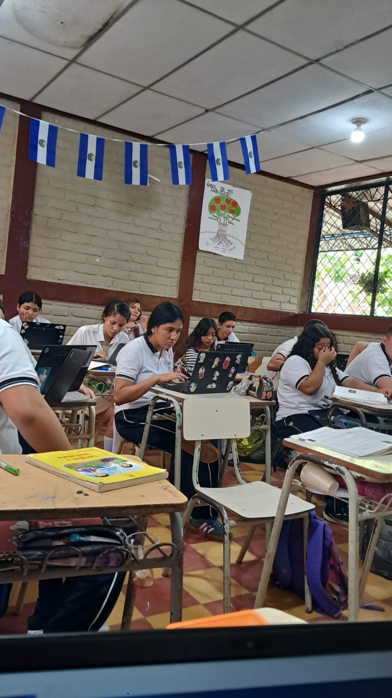
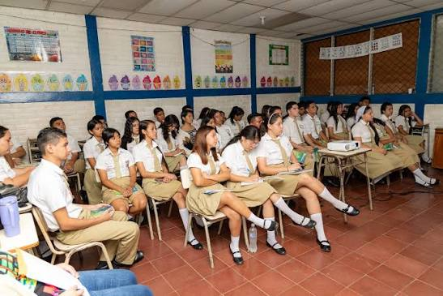
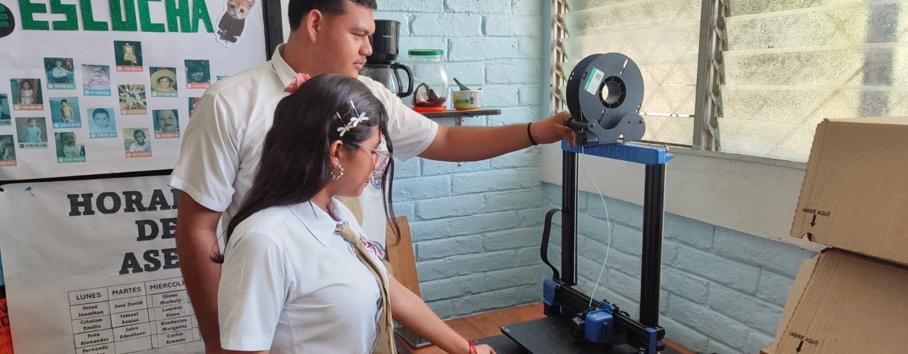
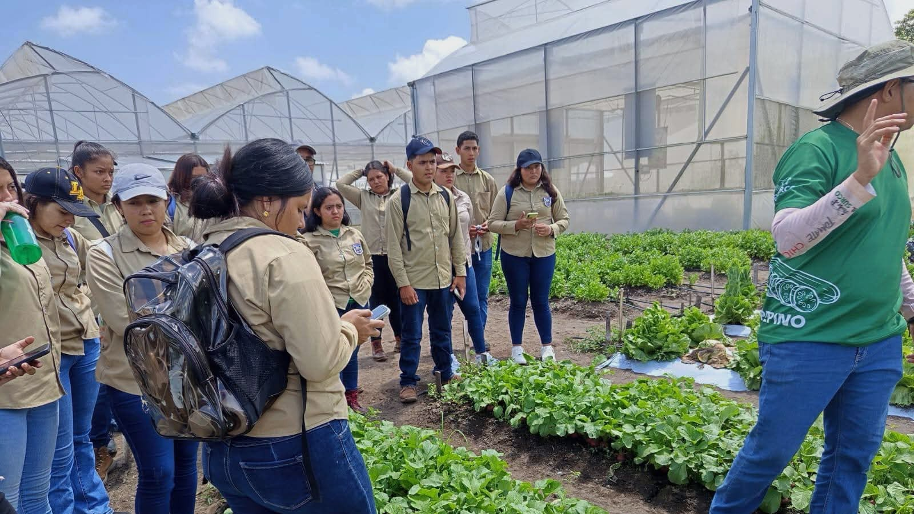

¿Quiénes somos?
Somos un centro educativo líder en la investigación, profesionalización y ejecución de proyectos, basado en la planificación por competencias. Buscamos mejorar nuestro entorno ambiental, fortalecer la calidad, la capacidad crítica y reflexiva, y transformar la sociedad, logrando la excelencia académica, la calidad humana y la preparación para la vida.
Nuestra Oferta Académica

Bachillerato General
Duración: 2 años

Administrativo Contable
Bachillerato Técnico Vocacional
Duración: 3 años

Desarrollo de Software
Bachillerato Técnico Vocacional
Duración: 3 años

Agropecuario
Bachillerato Técnico Vocacional
Duración: 3 años
Requisitos de Ingreso
- Partida de nacimiento original reciente.
- Certificado de noveno grado.
- Constancia de conducta del centro educativo donde estudió noveno grado.
Periodo de Matrícula
Del 03 de noviembre de 2026 al 31 de enero de 2027.
¡Te esperamos para formar parte de nuestra institución!
Ventajas de estudiar en el INEF
- Profesionales especializados.
- Horario accesible.
- Cancha de basketball techada.
- Campo experimental para prácticas agropecuarias.
- Huertos escolares.
- Sala de procesamiento de alimentos.
- Acceso a recursos tecnológicos e Internet.
- Actividades culturales, sociales, deportivas y extracurriculares.